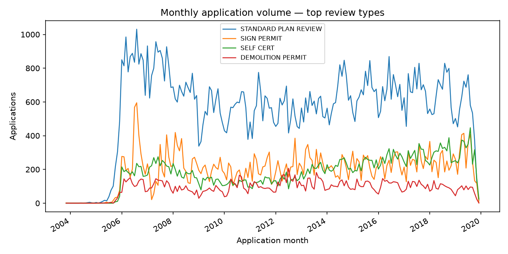
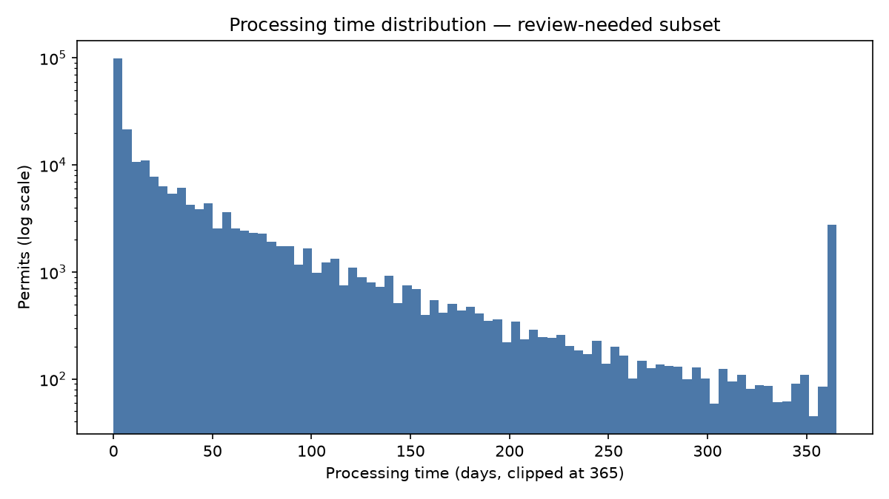
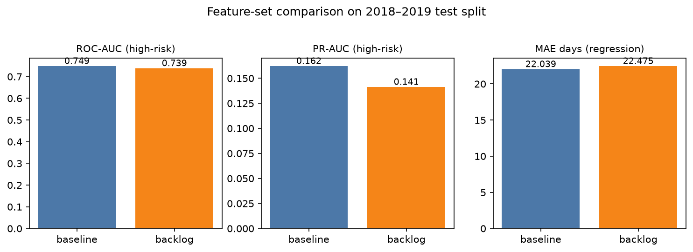
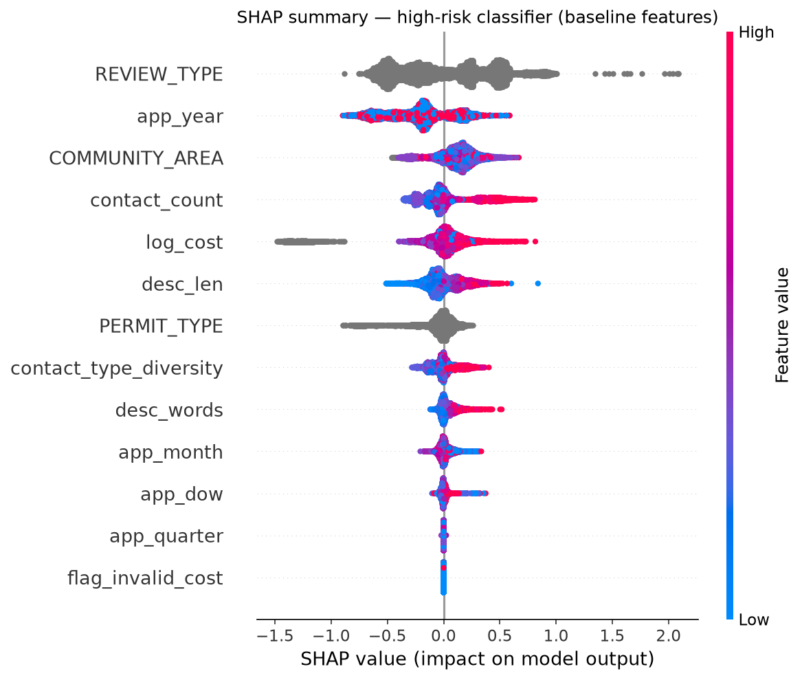

Using 227,603 Chicago building permits (2006–2019), I built a model to predict processing delays before construction and a diagnostic agent that works only from its outputs. One principle guides the system: tools over tokens. Every number comes from a deterministic tool; the LLM describes that evidence without adding facts.
Permit processing times depend on external approval queues beyond the control of owners and contractors. A delay can push back every downstream activity. This project answers three questions: (1) How many days will this permit take? (2) What is the probability that it will take unusually long relative to comparable permits? (3) What supports that judgment, and what happened in similar past cases? The goal is an evidence package that planners can use, beyond a single prediction.
The source contains 606K public Chicago permit records. Instant-issue categories such as EASY PERMIT (median 0 days, about 62% of records) were explicitly excluded because delay prediction does not apply to them. The remaining 227,603 permits undergo actual review. Processing time, the target variable, is strongly right-skewed: most permits finish within a few days, but the small number in the tail can derail a schedule.

Monthly application volume already signals that processing regimes change over time.

Processing-time distribution — the long tail is the core challenge.
The distinguishing feature is discipline, not the model. An explicit feature allowlist and blocklist enforce one question: was this information available when the application was filed? Splits are chronological: train ≤2016 / valid 2017 / test 2018–2019. Even one source of future information would undermine the entire performance table.
| Allowed (available at application) | Blocked (outcome leakage) |
|---|---|
| permit / review type | ISSUE_DATE |
| reported project cost (+missingness flag) | PROCESSING_TIME |
| community area | fee columns |
| application date features (year, month, weekday) | post-outcome status fields |
| contact count and type diversity | — |
| work-description text statistics | — |
| trailing volume and median from strictly earlier records | — |
The stages light up in sequence as this section enters the viewport.
Every stage is a rerunnable script, and each output passes an intermediate check. At the end of the pipeline, the agent assembles its diagnosis entirely through tool calls.
On the held-out 2018–2019 test, regression MAE is 22.0 days and median absolute error is 4.7 days. The gap between mean and median reflects the difficulty of the long-tailed distribution. High-risk classification achieves ROC-AUC 0.749 and PR-AUC 0.162 (base rate 6.6%); the top 10% of scores capture 28.1% of actual high-risk cases. These results are far from perfect, but they use only information available at application time.

Baseline versus +backlog features on the test period.
| Metric | baseline (selected) | +backlog |
|---|---|---|
| MAE (days) | 22.0 | 22.5 |
| Median AE (days) | 4.7 | 5.0 |
| ROC-AUC | 0.749 | 0.739 |
| PR-AUC | 0.162 | 0.141 |
| top-decile capture | 28.1% | 24.2% |
The +backlog variant was slightly worse on every metric (red), so the baseline was selected. The figures come directly from models/metrics.json.
Intuitively, a longer queue at application time should imply a longer delay. Yet adding trailing backlog features computed from strictly earlier records slightly worsened every metric (MAE 22.0→22.5, ROC-AUC 0.749→0.739). The explanation is temporal drift: backlog statistics learned from data through 2016 encoded a processing regime that had already changed by 2018–2019.
MAE 22.5 days · ROC-AUC 0.739 — adding trailing backlog features slightly worsened every metric
MAE 22.0 days · ROC-AUC 0.749 · PR-AUC 0.162 · top-decile capture 28.1% — trained only on application-time information; selected as the final model

Test-set SHAP summary. REVIEW_TYPE is the dominant driver.
REVIEW_TYPE is the dominant driver: the review path accounts for half of the delay. Reported project cost (log_cost), community area, and contact diversity follow. Permit-level SHAP contributions are included directly in the agent’s predict_risk() output, providing a numerical answer to why a particular application is at risk.
The diagnostic agent consists of three deterministic tools: predict_delay() (expected processing-time regression), predict_risk() (high-risk probability + SHAP contributions),
retrieve_similar() (historical statistics for similar cohorts). A rule engine adds recommendations. Optionally, an LLM then writes a 4–6 sentence memo using only this evidence. The diagnosis is complete without the LLM; it provides convenience, not evidence.
Limits: one city, one regulatory system, data only through 2019, and statistical text features. Roadmap: regime-normalized backlog, rolling-origin retraining, and generalization tests in other jurisdictions.
GitHub repository (code, tests, and documentation) Try the live agent → ← Portfolio home